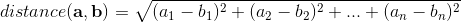
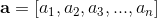
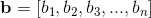
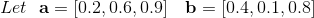
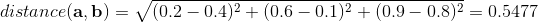

-
Begin with a dataset, each item (datapoint x) of the dataset should be reduced to a set of N features.
To make things easier, we choose to represent each feature by a number from 0.0 and 1.0 (normalization).
- Choose the number of desired clusters K
- Choose starting cluster centroids c1-ck: either randomly or by choosing from existing data points.
- ITERATE the following until the algorithm convergences on a specific set of clusters, or until the end of a fixed number of ITERATIONS
- ITERATION: For each data point xi:
- Calculate the distance from the datapoint to each of the centroids: c1, c2 .. ck);
- ASSIGN the datapoint to the cluster represented by the closest centroid
- ITERATION: For each cluster i with centroid ci
- Calculate a new centroid for cluster i which is the means (average) of all the datapoints assigned to that cluster.
For example, if we choose to describe our data using five features (N=5), one data entry could be described by the set of feature values [0.2, 0.44, 0.87, 0.1, 1.0]
K-Means is relatively an efficient method. However, we need to specify the number of clusters, in advance and the final results are sensitive to initialization and often terminates at a local optimum. Unfortunately there is no global theoretical method to find the optimal number of clusters. A practical approach is to compare the outcomes of multiple runs with different k and choose the best one based on a predefined criterion. In general, a large k probably decreases the error but increases the risk of overfitting.
Dimensionality reduction or dimension reduction, is the process of reducing the number of random variables under consideration by obtaining a set of principal variables. It can be divided into feature selection and feature extraction. [1]
Distances in mathematics, a metric or distance function is a function that defines a distance between each pair of elements of a set. A set with a metric is called a metric space. [1] A metric induces a topology on a set, but not all topologies can be generated by a metric. A topological space whose topology can be described by a metric is called metrizable. [4]
"In machine learning, many supervised and unsupervised algorithms use Distance Metrics to understand patterns in the input data. Also, it is used to recognize similarities among the data." [5]
The Euclidean distance or Euclidean metric is the "ordinary" straight-line distance between two points in N-dimensional Euclidean space. [6]






Commonly used distance metrics in machine learning are:

Figure illustrating Manhattan versus Euclidean distance. The red, blue, and yellow lines all have the same Manhattan length (12), whereas the green (Euclidean) distance between the points has length of about 8.48.
References:
[1] Glossary of artificial intelligence
[2] Classification
[3] K-means clustering algorithm
[4] Distance metrics (mathematics)
[5] How to measure distances in machine learning
[6] Euclidean distance
[7] K-means Clustering
The anatomies of a K-means clustering algorithm


[left] Anatomical planes, 2014: including median (red), parasagittal (yellow), frontal or coronal plane (blue) and transverse or axial plane (green). Made with the default MakeHuman model (intermediate gender proportions) with breast size reduced to be more androgynous, posed in standard anatomical position. Blender source available on GitHub.
[middle] From the book, "The Human Body and Health Revised" by Alvin Davison, published in 1908 by Alvin Davison. This book has a copyright of 1908 by Alvin Davison and one in 1924 by American Book Company. The first copyright was pre-1923 and the copyright was never renewed; therefore, the book should be in the public domain Flickr data on 2011-08-17: Tags: vintage, book, medical, image, illustration, drawing, public domain, copyright free License: CC BY 2.0 User: perpetualplum Sue Clark
[right] Body measurements, back view, Chinese woodcut, 1443: Woodcut from Tong ren shu xue zhen jiu tu jing (Illustrated Manual of Acupoints on the Bronze Man) by Wang Weiyi, published in 1443 CE (8th year of the Zhengtong reign period of the Ming Dynasty), illustrating the system of proportionate body measurements. This illustration consists of a simple outline drawing of a human body, viewed from the back. Captions on the image indicate the distances between various landmarks on the surface of the body, as an aid in establishing the location of acupoints and the paths of the channels at the back of the body. The units of measurement are the chi and cun, the length of the cun being based on the proportions of the individual's body, i.e. 1 cun = the distance from the base of the middle finger to the end of the crease of the middle joint. 10 cun = 1 chi. See 'Lettering' for further details.
Exercise: rethinking distances & proximities

In groups, briefly analize your dataset; then follow the four main tasks bellow:
— > (1) Define distance
Collect and discuss diferent notions around defining 'distance' (or the concept of difference);
Consider existing methods, but also scales and orientations for observation, affective response & affinity.
Finally choose a choose a measurement system.
— > (2) Tagging and Weighting
Create a collection of tags to be assigned to the data samples/ each entry of the data set.
Assign the tags and give values to each of them.
— > (3) Clustering
Execute the k-means clustering algorithm and document each iteration of results;
— > (4) System representationDiscuss how to represent the knowledge system you are building. And how to best communicate the process from tags (processual happening on the data collection) to the clustering iterations.
Consider dimensionality reduction and its implications (what is preserved and what is left out).
Discuss and list potential entry points for performativity, critical and aesthetic interventions in this algorithmic process.
— > (0) Restart: new Iteration
Experiment the process with another dataset; with different measurement systems; parameters; and analyse how it impacts the clustering.
Resources:
Machine Learning - Glossary
Machine learning (ML) is the scientific study of algorithms and statistical models that computer systems use to perform a specific task without using explicit instructions, relying on patterns and inference instead. It is seen as a subset of artificial intelligence. [1]
Supervised learning is the machine learning task of learning a function that maps an input to an output based on example input-output pairs. It infers a function from labeled training data consisting of a set of training examples. In supervised learning, each example is a pair consisting of an input object (typically a vector) and a desired output value (also called the supervisory signal). A supervised learning algorithm analyzes the training data and produces an inferred function, which can be used for mapping new examples. An optimal scenario will allow for the algorithm to correctly determine the class labels for unseen instances. This requires the learning algorithm to generalize from the training data to unseen situations in a "reasonable" way. [1]
Unsupervised learning is a type of learning that helps find previously unknown patterns in data set. In contrast to supervised learning, unsupervised learning can be used to develop knowledge about the structure and internal relationships of a dataset without pre-existing labels, classifications or categories. Two of the main methods used in unsupervised learning are principal component and cluster analysis. [1]
Semi-supervised learning (bootstrapping) is a class of machine learning tasks and techniques that also make use of unlabeled data for training – typically a small amount of labeled data with a large amount of unlabeled data. Semi-supervised learning falls between unsupervised learning (without any labeled training data) and supervised learning (with completely labeled training data). Semi-supervised learning is also of theoretical interest in machine learning and as a model for human learning.
Reinforcement learning is an area of machine learning concerned with how software agents ought to take actions in an "environment" in order to maximize some notion of cumulative reward. It differs from supervised learning in not needing labelled input/output pairs be presented, and in not needing sub-optimal actions to be explicitly corrected. Instead the focus is on finding a balance between exploration (of uncharted territory) and exploitation (of current knowledge).[1]
Deep learning is part of a broad family of machine learning methods used to learn complex and non-linear models of data, usually through the implementation of various "deep" or heirarchical structures such as a neural network. The learning techniques can be supervised, semi-supervised or unsupervised.
Further Links
The CatalogueThe Theatre - display dataset version;
Code Repository
Project's classification system: a growing glossary (/expansion of “all tags”)
Further references:
— > History of artificial intelligence— > Timeline of machine learning
— > Article on k-means clustering
— > Wikipedia article on distances
— > Machine Learning Modelling and distance metrics